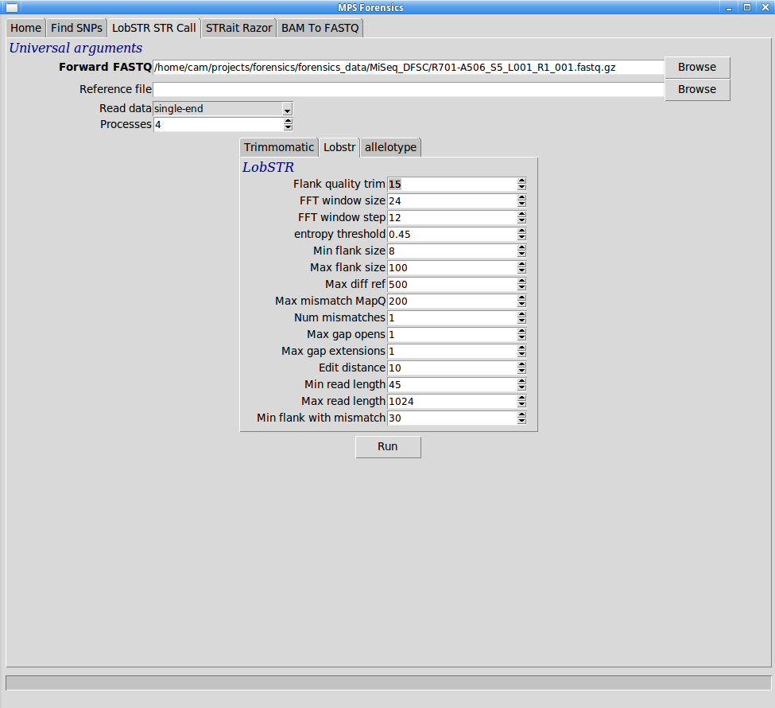

Return to help page
Return to help page
LobSTR is a two-part bioinformatic tool for calling Short Tandem Repeats (STRs), that works by first aligning reads against a reference genome. By default (provided) LobSTR uses a reduced genome that covers standard loci and removes difficult or ambiguous repeat regions. It is capable of calling STRs from both single-end and paired-end reads, and like the SNP calling pipeline it is able to automatically determine if paired-end data is available. Unless the 2nd read is full-length though, the pipeline should be run in single-end mode to avoid loss of data from poorly mapped read pairs. The official LobSTR site is here: http://lobstr.teamerlich.org/index.html
This STR calling pipeline shares components in common with the SNP calling pipeline - namely Trimmomatic and FASTQC.
Reads are first checked for quality, trimmed/cleaned as requested by the user (we recommend minimal quality trimming and instead removing only poor quality reads) and the resulting reads QC reported again. Then the resulting reads are sent to the LobSTR first stage (named LobSTR) for alignment. This tool is actually a modified form of the aligner BWA, and outputs a standard SAM-format file, the results of which are sorted and indexed before the second stage LobSTR tool calls the observed STR alleles (allelotype) and outputs these as a VCF file (Variant Call File). After calling alleles, the results are intersected with established CODIS and Y-chromosome loci and the results are uploaded to a Mongo database where they can be read by our visualisation tool.
To use the LobSTR pipeline, make sure the MPS Forensics application is running, and click on the "LobSTR" tab at the top of the application screen. You should see the following screen: 
After setting all appropriate values, click the "Run" button. This button with turn red and the pipeline software will become unresponsive except for the status and progress bars at the bottom of the screen, which will continue to show updates until the pipeline completes, and the screen once again will respond to user input.
Once the user has finished running the analysis pipelines they are free to launch the data viewer tool, by clicking on the "Home" tab and then clicking the "SNP/STR Viewer" button. This will open the Firefox web browser and load our data viewer tool that is running on the user's machine. If the user has accidentally closed IGV, it is a good idea to restart IGV first. For more information on IGV, including how to restart it, please read the IGV help page here: IGV.html.
Return to help page